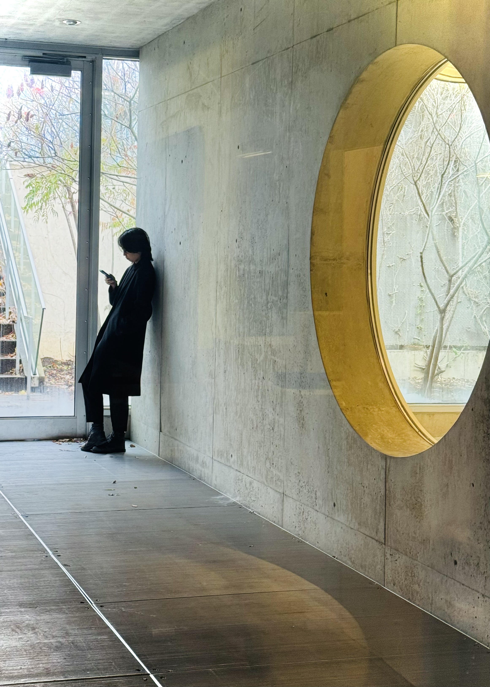

Design is inextricable from infrastructure and policy: I hope to bring an understanding of these institutional systems to issues of architecture and planning.
Anna Cao is currently a third year Master of Architecture candidate at Cornell University with a Bachelor of Science in Civil Engineering from Northwestern University.
Born and raised in the California Bay Area, currently based in New York City.
